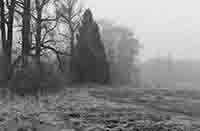
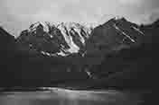
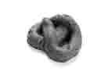

that time we tripped,
I said you were a wooden cabin in the woods during a never ending winter,
plagued by an indefinite cold spell,
condemned
icebound
lit by a bourbon fueled fireplace that wouldn’t ever go out.

an image of a winter landscape
I also remember saying she is a mountain lake I walked past during early winter
a thin sheet of ice glazed over the surface of the water
jumping in naked and then sticking my head out to smell the frost and the remainder of the plant life

an image of a winter lake
we were sitting on the tiled bathroom floor,
the walls pulsating,
the reflection of our figures throbbing in the mirror.
we were half leaning against each other and half leaning against the side of the bathtub.
you said I was your black and white and silver,
Jessina thought it was a reference to early photography
I squat and lean back like some jackass Asian tourist
to take photos of you so I can swipe through them when you’re not here.
there’s that Chinese tourist who shat at the the botanical gardens in Sydney
there’s a rumor that the cops made him eat his own shit
I’ll stuff my face with shit for you as if I was a senior citizen at a Golden Corral
sittin on the bathroom floor
facade of Golden Corral

a plastic shit